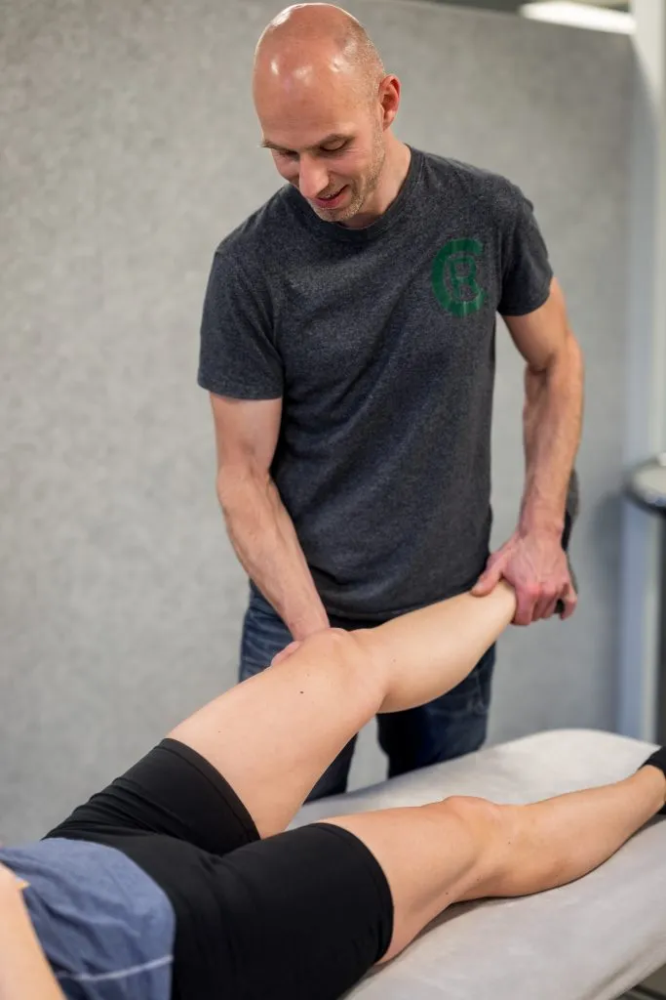

Fysio- en manuele therapie
Na een grondige analyse werken we met specifieke training en waar nodig manuele behandeling. Geen symptomen wegpoetsen, maar de oorzaak aanpakken. Van een liesblessure bij het hockey tot knie-, rug-, nek- of schouderklachten.